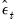
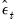

|
|
|
, and the one-step ahead standardized residuals,
.
, the smoothed signals,
, smoothed signal disturbances,
, or the standardized smoothed signal disturbances,
.
(root mean square) standard error bands are plotted where appropriate.
, and covariance matrix, . If the unknown parameters have previously been estimated, EViews will evaluate the initial conditions using the estimated values. If the sspace has not been estimated, the current coefficient values will be used in evaluating the initial conditions.
, the filtered (contemporaneous) states, , the smoothed state estimates, , smoothed state disturbance estimates,
, or the standardized smoothed state disturbances,
. In each case, the data are displayed along with corresponding standard error bands.
You can use the EViews procedures to create, estimate, forecast, and generate data from your state space specification. Select Proc in the sspace toolbar to display the available procedures:
, the filtered state mean,
, the smoothed states,
, state disturbances, , standardized state disturbances, , or the corresponding standard error series (square roots of the diagonal elements of
, ,
and ).
Simply select one of the output types, and enter the names of the output series in the edit field. The rules for specifying the output names are the same as for the Forecast... procedure described above. Note that the wildcard expression “*” is permitted when saving state results. EViews will simply use the state names defined in your specification.
 , smoothed signal,
, smoothed signal,  , or signal disturbance estimates, . EViews also allows you to save the corresponding standard errors for each of these components (square roots of the diagonal elements of
, or signal disturbance estimates, . EViews also allows you to save the corresponding standard errors for each of these components (square roots of the diagonal elements of  ,
,  , and
, and  ), or the standardized values of the one-step residuals and smoothed disturbances,
), or the standardized values of the one-step residuals and smoothed disturbances,  or .
or .